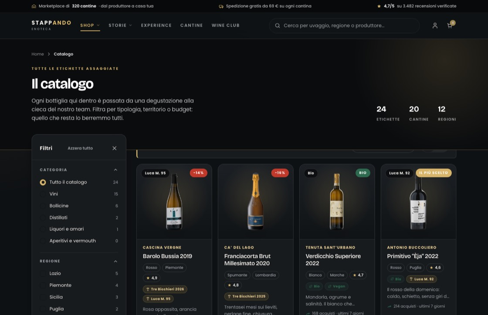

Spegnere la stanza per accendere la bottiglia
Gli altri temi illuminano la pagina; questo la spegne. Il fondo scende a carbone, i testi diventano avorio e l'unico colore vivo è l'oro, usato con il contagocce: un filo sotto le fasce, il prezzo, il pulsante. Sotto ogni bottiglia c'è un alone caldo, come una luce da banco, e la testata è vetro sfocato che lascia intravedere quello che scorre. È il tema giusto per le etichette importanti, le verticali e i regali; è l'unico degli otto a fondo scuro.

Cinque, e l'oro si usa poco
Il grigio dei testi secondari è #9aa0a4; i contorni sono l'avorio al 13% di opacità, così restano visibili senza diventare righe bianche. Il verde di conferma è #6fbf95, schiarito apposta: quello chiaro degli altri temi sul carbone sparirebbe.
Bricolage per i titoli, Poppins per il resto
Scegliere cosa bere
Bricolage Grotesque · peso 500 · spaziatura −0,03em · occhio ottico 72Ogni bottiglia qui dentro è passata da una degustazione alla cieca del nostro team.
Poppins · peso 400 · interlinea 1,6TUTTE LE ETICHETTE ASSAGGIATE
Poppins · peso 700 · 10 px · spaziatura 0,26em · maiuscolo · oroNessun carattere con grazie, qui come negli altri sette temi: si usano solo Bricolage Grotesque, Montserrat e Poppins.
Cosa cambia rispetto al tema di serie
| Elemento | Definitivo | Notte |
|---|---|---|
| Fascia di testata | Gradiente petrolio con alone dorato | Carbone pieno, filo d'oro sotto, alone caldo |
| Barra in alto | Bianca, piena | Vetro scuro sfocato |
| Barra sotto al titolo | Scheda bianca staccata | Scheda scura con linguetta d'oro a sinistra |
| Sfondo della foto | Alone bianco su grigio chiaro | Alone dorato su grigio scuro |
| Prezzo | Petrolio | Oro |
| Pulsante d'acquisto | Pieno petrolio, testo bianco | Pieno oro, testo scuro |
| Angoli | 14 px | 10 px |
| Ombre | Morbide e chiare | Profonde, quasi nere |
Un file solo
- Il tema vive tutto in temi/skin-notte.css: ridefinisce una ventina di valori che tutte le pagine usano già, più una manciata di regole per fasce, testata e schede.
- Si sceglie dal selettore in basso a destra, su qualunque pagina, oppure dalla galleria dei temi. La scelta resta in memoria mentre navighi.
- Si incrocia con le tre impaginazioni — Standard, Vetrina, Compatto — che cambiano la disposizione senza toccare i colori.
- Le foto delle bottiglie sono scontornate su fondo trasparente: è per questo che funzionano sia sul chiaro sia sullo scuro senza rifarle.